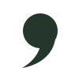

HƯỚNG 01 · TRỪU TƯỢNG
Dấu ngắt
Một khoảng dừng nhỏ để hỏi cơ thể: hôm nay mình cần gì?

Cùng tên thương hiệu
Một chút yoga
Kiểm tra khi thu nhỏ
72 px
48 px
28 px
MạnhGọn, gắn với chữ “chút”, có thể tạo nhịp trong nhận diện động.
Cần thửCó thể giống dấu phẩy hoặc bong bóng trò chuyện.